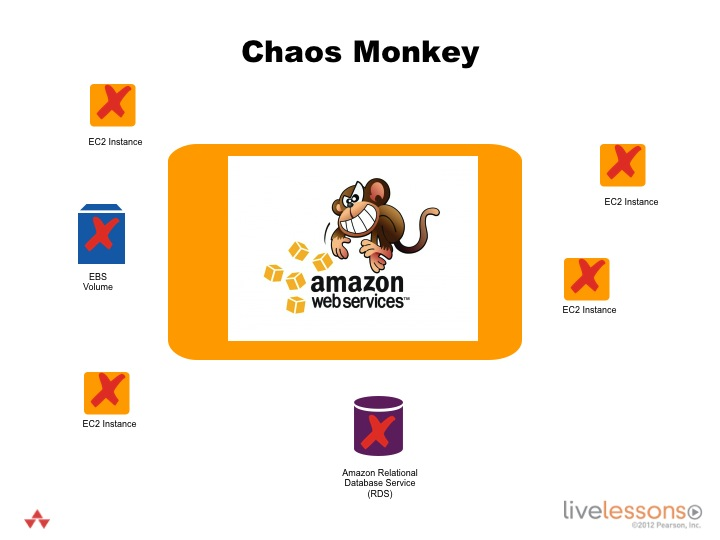

Create and run a rudimentary Chaos Monkey that randomly terminates instances.
Chaos Monkey

Run the Chaos Monkey job
Go to http://IPADDRESS:8080/jenkins/job/Chaos/. IPADDRESS is the IP Address assigned to you when you launched the Jenkins stack.
Select the Configure link for the Jenkins job. View the job configuration.
View the Chaos Monkey code
Open the infrastructure destroyer Ruby file. You can find this file by visiting https://github.com/stelligent/devopsinthecloud/blob/master/chaos/infrastructure_destroyer.rb.
$ cd devopsinthecloud/chaos
$ sudo vim infrastructure_destroyer.rb
This script is configured in Jenkins to run every night.
Using the Ruby AWS SDK, it randomly terminates instances.
Be cautious in using this tool. You need an architecture designed to accommodate this kind of failure. This is only an example of one resource - EC2 instance. There are myriad combinations of havoc you can apply to your infrastructure.